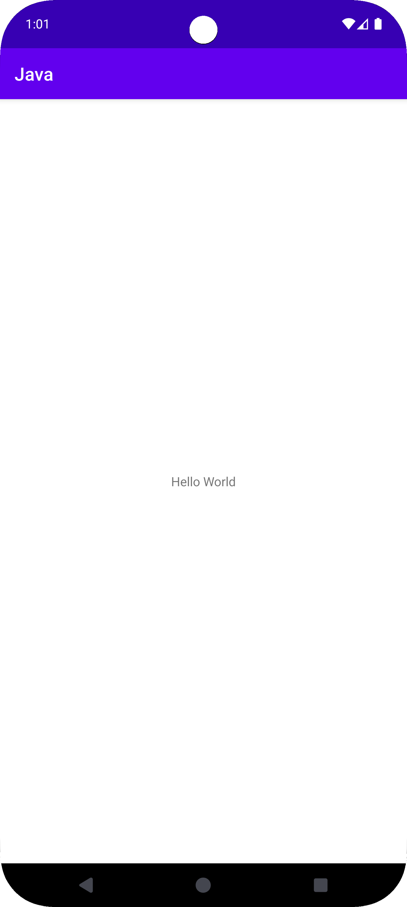

test.c
#include <stdio.h>
int main() {
int testNumber = 10;
int hexNumber = 0xFF0077;
float testFloat = 1.111f;
char testT = 'T';
char testText[10] = "Test text";
/* test if */
if (testNumber == 1) {
testNumber++;
} else {
testNumber--;
}
/* test for */
for (int i = 0; i < 2; i++) {
printf("Text: %s\n", testText);
}
printf("Don't select \"int\" int printf.\n");
return 0;
}test.c
#include <stdio.h>
int main() {
int testNumber = 10;
int hexNumber = 0xFF0077;
/* test for */
for (int i = 0; i < 2; i++) {
printf("Text: %s\n", testText);
}
/* Multi
Line
Comment */
printf("Don't select \"int\" int printf.\n");
// Hello is comment
return 0;
} // this is commentDon't select "int" int printf.
